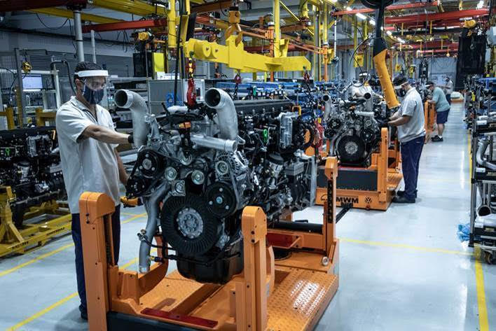

Motores Estão Mais Caros
Publicado em: 20 de fevereiro de 2025
Motores estão mais caros: O custo do metal subiu, logo os fabricantes de motores levaram ferro! Em uma reviravolta que ninguém esperava, os fabricantes de motores agora estão enfrentando uma "tempestade de preços", e não, não estamos falando de combustível. O custo do metal disparou, e o que se segue é uma grande surpresa: os motores ficaram mais caros. "Parece que até os motores estão precisando de mais combustível para funcionar!", brincou um especialista em automóveis. "Foi um impacto tão forte quanto o torque de um motor de Fórmula 1", comentou um analista de mercado. "Só que agora ninguém consegue mais acelerar nada sem pagar um preço absurdo. O mercado de motores está superando até as taxas de juros!" A situação ficou tão tensa que os fabricantes de motores, que estavam acostumados a "dar uma acelerada", se viram em apuros. "Levamos ferro", disse um executivo, com um sorriso nervoso. "Agora temos que passar a cobrar pelo 'ferro' que estamos comprando para produzir os motores!" A alta nos preços foi de tal magnitude que as montadoras começaram a sugerir aos clientes um novo tipo de motor: "se você não pode pagar por um motor de última geração, considere um motor vintage. Ele pode ser mais barato... se você conseguir encontrar um por aí". As piadas não pararam por aí. "Se continuar assim, vamos ter que andar a pé ou começar a fabricar motores à base de plástico, já que o metal está ficando mais caro que ouro", disse um mecânico, tentando manter o bom humor no meio de tanta inflação. Enquanto isso, os consumidores estão preocupados. "Os motores estão tão caros que estou pensando em usar meu carro como decoração de jardim", comentou um proprietário de veículo, visivelmente estressado com a situação. "Mas pelo menos o metal agora é valorizado como obra de arte!" No fim, parece que o mercado de motores está realmente ‘pegando fogo’... Mas se continuar assim, quem vai acabar levando ferro são os consumidores!